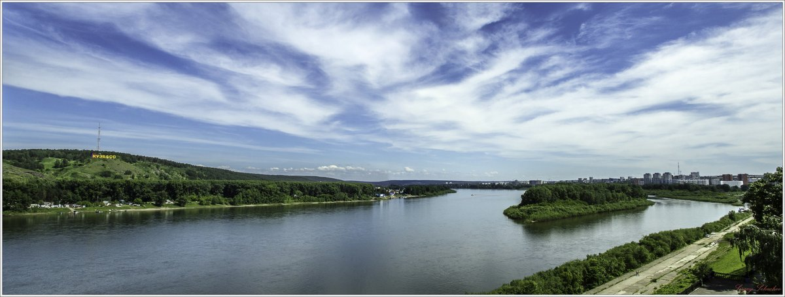
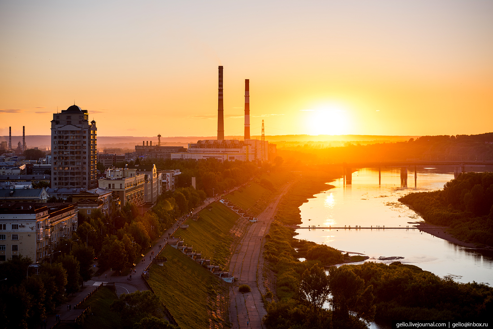
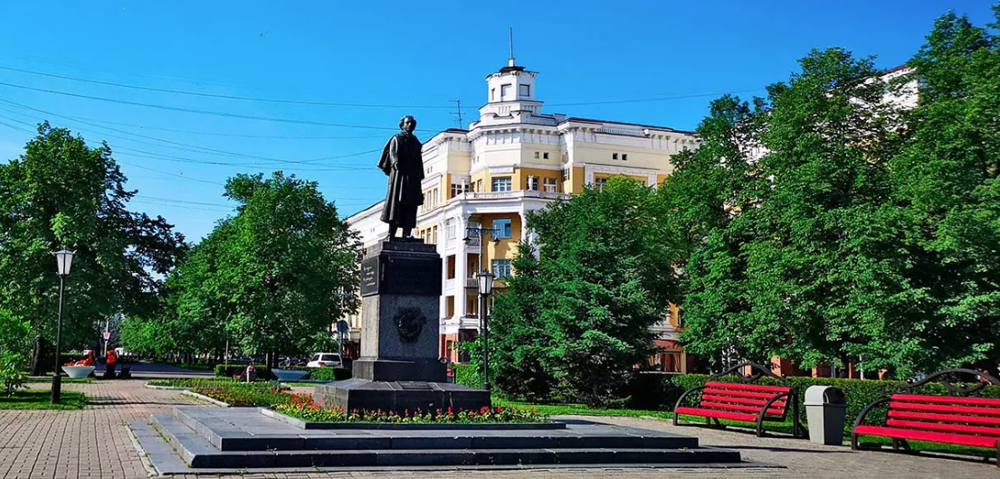

Топ выборПо набережной Томи и городским легендам
Старый деревянный цирк, где выступал Юрий Никулин, самый старый дом Кемерова, живописная Притомская набережная, золотые косы Томи и реликтовый Рудничный бор.

С нашими пешеходными гидами вы не будете блуждать по городу в поисках интересных мест. История деревянного цирка, самый старый дом Кемерова, вековые липы Весенней и панорамы Томи — оживают прямо в вашем смартфоне с живым аудиогидом!
Каждый маршрут бережно составлен местными краеведами: оптимальный километраж, удобные пешеходные дорожки и увлекательные аудиоистории.

Топ выборСтарый деревянный цирк, где выступал Юрий Никулин, самый старый дом Кемерова, живописная Притомская набережная, золотые косы Томи и реликтовый Рудничный бор.
 Вечерний хит
Вечерний хит
Прогулка по улице Весенней: липовый бульвар, скульптура «Радужное детство», часы «В 6 часов вечера после войны», Театр драмы, бюст Леонова и Вечный огонь.
 Индустриальный эпос
Индустриальный эпос
Колыбель угольного бассейна, Горелая гора Михайлы Волкова, голландский конструктивизм ван Лохема и грандиозный монумент Эрнста Неизвестного шахтерам.
Переключайтесь между маршрутами, нажимайте на метки для изучения остановок и запускайте аудиоэкскурсию прямо с карты.
Мы объединили исторические исследования, городскую романтику и современные веб-технологии, чтобы ваши прогулки были комфортными и познавательными.
Все пешеходные маршруты проверены на практике: хорошее вечернее уличное освещение, благоустроенные тротуары, отсутствие опасных переходов и доступность для всех возрастов.
Подскажем, где варят лучший сибирский раф с кедровым грильяжем, где расположены видовые скамейки на реку Томь и в каких точках получаются эффектные кадры для соцсетей.
Начинайте маршрут с любого перекрестка, ставьте аудиогид на паузу, заходите в картинную галерею или театр и возвращайтесь к прогулке в любой другой день.
Никаких тяжелых установок из App Store или Google Play. Сервис работает прямо в мобильном браузере с мгновенным откликом и поддержкой работы без интернета.
Кемерово — это не просто промышленный центр Сибири. Это широкая и могучая река Томь, запах соснового бора на набережной, уютные бульвары с теплыми фонарями и богатейшая летопись сибирского характера.

Более 500 человек уже прошли по нашим маршрутам и взглянули на знакомый город по-новому.
Приехала в Кемерово на выходные по делам и думала, что город исключительно индустриальный. Благодаря «ПешКем» открыла для себя потрясающую европейскую архитектуру на Весенней и невероятную историю деревянного цирка! Аудиогид прямо в браузере — просто восторг!
14 мая 2026Живем в Кемерове больше 15 лет и каждый день ходили мимо дома партизан Губкиных, не зная, что это самый старый дом города! Прошли с детьми весь маршрут по набережной — интерактивная карта с точками супер удобная.
28 апреля 2026Маршрут по Красной Горке и домам ван Лохема — это жемчужина! Настоящий мировой конструктивизм посреди Сибири. Спасибо ребятам за стильный дизайн и бережное отношение к истории Кузбасса.
3 мая 2026